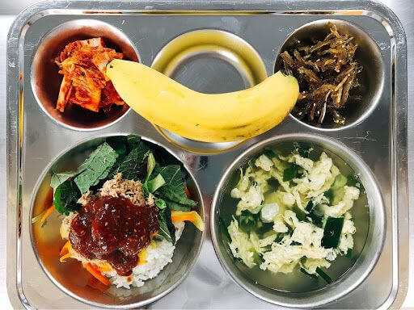
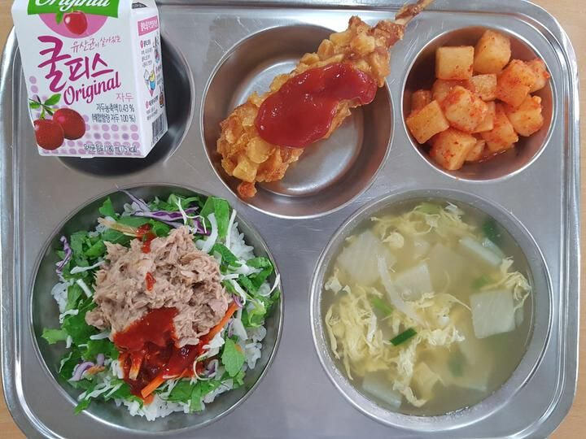
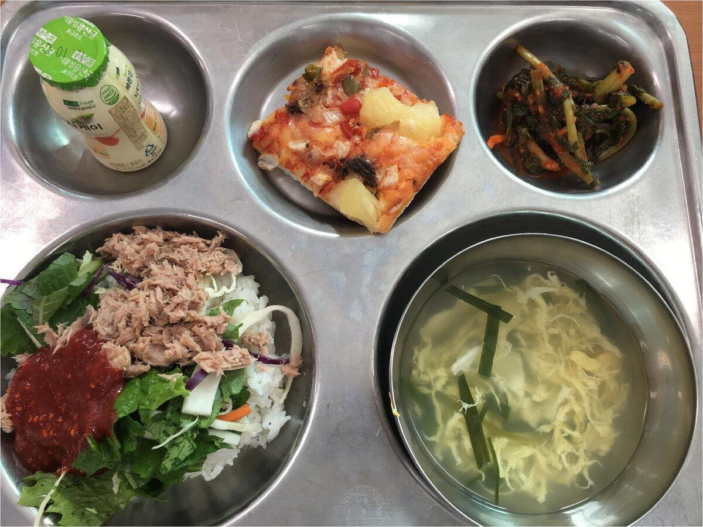
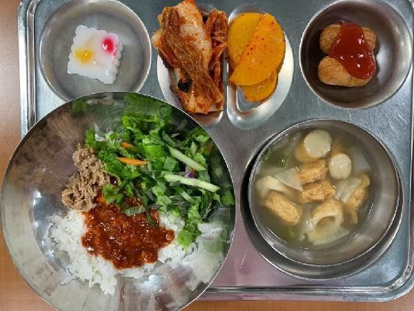

참치 야채 비빔밥




참치 야채 비빔밥
해물 비빔소스 어땠는데
초고추장 비빔밥 저거 면으로 줬으면 훨씬 좋았겠지
난 맛있게 먹었어 참치랑 초고추장이랑 잘 어울리드라 깻잎넣어줄때도 있었는데 셋이 섞이면 맛이 좋아
오잉 그런가
비빔밥류는 애들 다 좋아했던 거 같은데
기본비빔밥 콩나물밥 다
무난한디?
메인반찬으로 좆볶이 좆물파전 나오는게 최악임
좆물파전 뭔가 이상해..
불R친구가 만들어주는 ㅈ물파전~
좆볶이도 뭔가 나올거같음
해병올챙이파전 ㄷㄷ
불어터진 미지근한 떡볶이
해병 크림파스타는 안나왔나? ㅋㅋ
난 비빔밤 별로였음
고추장이 존나 느끼하다고 해야하나 맛이없었음
그건 니가 잘하는 학교를 안가봐서 그래
시발ㅠㅠㅠㅠ
너 그렇게 주저앉아서 울고 끝낼거야?
분하지도 않아?
야채참치 비빔밥은 맛있엇는데 불호가 있구나
세그릇먹음
대놓고 호인데 불호인 애들은 걍 편식충임
참치도 ㅈ도 안줘서 싫어했는듯
근데 막상 비벼서 먹으면 맛있긴 했음.
나물에 고기쪼금이랑 계란만 넣어줘서ㅠ두그릇 먹었는데...
밥이랑 떡볶이 순대나오는날이 너무 탄수화물이었음
참치가 퍽퍽하고 비린내 민감하면 불호도 있긴 하더라.
난 급식 그 콩나물간장밥? 그게젤 족같던데
이게 불호가 있었구나
좆나 맛있게먹었는데
불호박는새기는 베트남이민가라
난 토란국
저거 깻잎이 들어가야지 더 맛있었음
나 좋아했는데 퍽퍽한거만 빼면
양배추 양상추 치커리 이런거 라면처럼 먹는데 저렇게쥬면 안먹음
해물 비빔소스 미만 잡
짜장밥,하이라이스가 제일 싫었음 시큼해서
초장을 안좋아해서
쫄면에 너비아니
존나 좋아했는데
아니 초장을 왜 비벼먹냐고 씨발거
맛은 그냥 그런데 양이 너무 적어
떡볶이에 보라색 양념을 했던거 아직도 안잊혀진다
시발 맛보고 바로 토하러갔음..
좆다리강정 빼고는 어지간해서 다 맛있게 먹은 듯